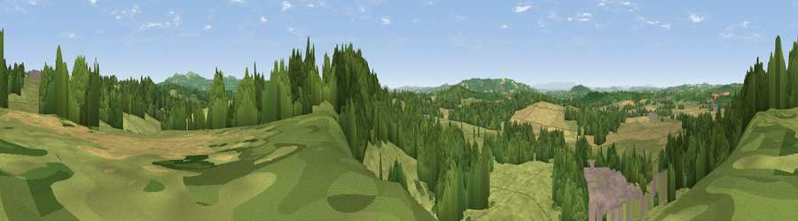

Viewpoint near Fromes Hill
#14625 in England · top 36% of its area beats it · near Fromes HillWhere it is
The exact computed spot (SO 67025 44525). Click the marker for map links.
The view, rendered

A 360° render of this exact spot computed from the terrain model, tree cover and land cover — summer colours, afternoon light, calibrated against photographs of famous viewpoints. Real trees, hedges and buildings will differ in detail.
The panorama
Grey silhouette: terrain skyline in each direction (720 bearings, Earth curvature and refraction included). Dashed green: skyline with trees (+15 m) and buildings (+8 m) as obstacles. Blue strip: how far the ground is visible on each bearing.
Where the view opens
Wedge length = distance to the farthest visible ground on that bearing (vegetation-aware). Rings at 10, 25 and 50 km.
What fills the view
46% grassland · 36% woodland · 14% cropland · 4% built-up
Angular shares of the visible panorama (visual magnitude), not map area. Landscape diversity 0.49 (0–1 Shannon).
Key numbers
More beautiful places nearby
The staircase of upgrades: each row has a higher view potential than everything closer. Driving times are estimates from straight-line distance, calibrated against real road routing — check an actual route before setting out.
| Place | Direction | Drive | Score |
|---|---|---|---|
| Viewpoint near Fromes Hill | NNW · 0 km | ~1 min | 60.8 |
| Viewpoint near Bosbury | SSE · 0 km | ~1 min | 62.7 |
| Viewpoint near Fromes Hill | N · 2 km | ~5 min | 67.3 |
| Viewpoint near Bishop's Frome | N · 4 km | ~10 min | 69.0 |
| Viewpoint near Coddington | ESE · 6 km | ~13 min | 76.4 |
| Viewpoint near Tarrington | SW · 8 km | ~16 min | 81.4 |
| Seagar Hill | SW · 8 km | ~16 min | 82.1 |
| Worcestershire Beacon | E · 10 km | ~19 min | 87.1 |
52.09807, -2.48279 · source: screening · position refined by local search. Computed location — check access rights before visiting.